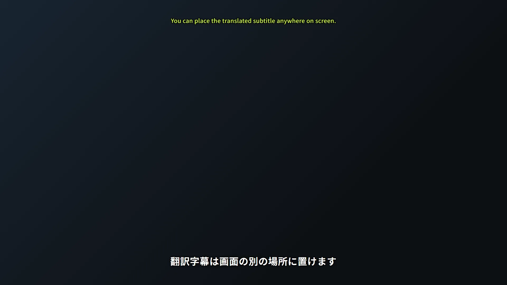
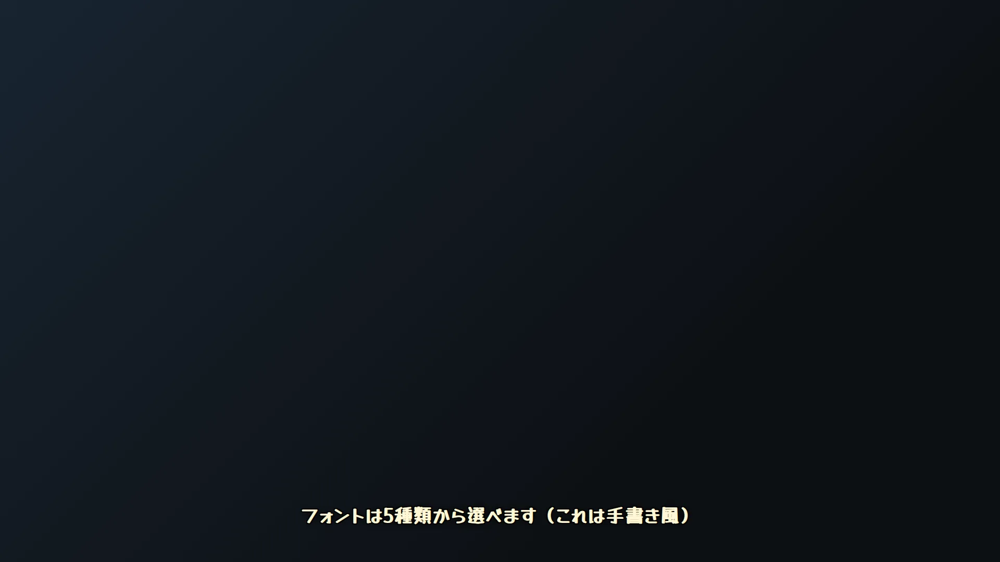

配信でOBSに音声認識字幕を表示する方法
Ligastmir（無料）を使うと、話した内容がリアルタイムで字幕になり、OBS の画面に表示されます。
耳が聞こえづらい視聴者・音を出せない環境で見ている視聴者にも配信が届くようになり、
翻訳字幕（英語）を重ねれば海外の視聴者にも伝わります。設定は「マイクを選んでON → URLをOBSに貼る」だけです。
できあがりの例



最短手順（5ステップ）
マイクを選んで音声認識をON「音声・コメント」ページで使うマイクを選び、音声認識（字幕）をONにします。
字幕のURLをコピー「ブラウザソース」ページに、字幕・コメビューなどのURLがコピーボタン付きで一覧になっています。
OBSにブラウザソースを追加OBSのソース欄「＋」→「ブラウザ」→ URLを貼り付け。「非アクティブ時にソースをシャットダウンする」のチェックは外してください（映像が止まる原因になります）。
話して確認マイクに向かって話すと字幕が出ます。「テスト/ログ」ページの調整用字幕プレビューを使うと、出しっぱなしにして見た目を合わせられます。
見た目は細かく調整できます
- 色・縁取り — 文字色と縁取りの色/太さを、日本語字幕と翻訳字幕で別々に設定できます。
- 表示位置 — 上下・左右・画面端からの余白。ゲーム画面やワイプに被らない場所へ動かせます。
- 最大行数 — 長く話しても字幕が伸びすぎないよう、行数を制限できます。
- フォント — 標準／まる字／極太／明朝／手書き風の5種類。
- 翻訳字幕の別配置 — 日本語字幕と英語字幕を画面の別の場所に置けます。
詳しい設定手順は 使い方ガイド ③見た目の調整 にまとまっています。
うまくいかないとき
テスト字幕は出るのに、本番の字幕が出ない
アプリを OneDrive などのクラウド同期フォルダ直下に置かない／マイクを 16bit・48000Hz（or 44100Hz）・モノラルにすると直ることが多いです。→ こんな時は
OBS 側に何も表示されない
「非アクティブ時にソースをシャットダウンする」のチェックを外す／Ligastmir が起動しているか確認。OBSより先に Ligastmir を起動する（または OBS の同伴起動を使う）と確実です。→ FAQ